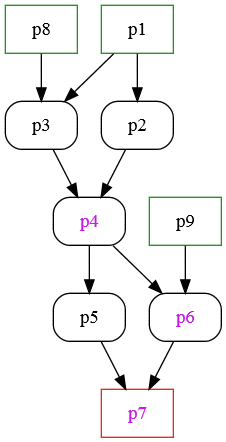

Pipeline flowchart
Draw flowchart of a pipeline
PyPPL will generate a graph in DOT language, according to the process dependencies.
You can have multiple renderers to visualize to graph. A typical one is Graphviz. With its python port graphviz installed, you can output the flowchart to an svg figure.
Generate the flowchart
For example, if we have a pipeline written in pipeline.py:
from pyppl import PyPPL, Proc
p1 = Proc()
p2 = Proc()
p3 = Proc()
p4 = Proc()
p5 = Proc()
p6 = Proc()
p7 = Proc()
p8 = Proc()
p9 = Proc()
"""
p1 p8
/ \ /
p2 p3
\ /
p4 p9
/ \ /
p5 p6 (export)
\ /
p7 (export)
"""
p2.depends = p1
p3.depends = p1, p8
p4.depends = p2, p3
p4.exdir = "./export"
p5.depends = p4
p6.depends = p4, p9
p6.exdir = "./export"
p7.depends = p5, p6
p7.exdir = "./export"
# make sure at least one job is created.
p1.input = {"in": [0]}
p8.input = {"in": [0]}
p9.input = {"in": [0]}
PyPPL().star(p1, p8, p9).flowchart().run()
You can specify different files to store the dot and svg file:
pyppl().starts(p1, p8, p9).flowchart("/another/dot/file", "/another/svg/file")
Note The svg file will be only generated if you specify the right command to do it.
For example, if you have Graphviz installed, you will have dot available to convert the dot file to svg file:
PyPPL().start(p1, p8, p9).flowchart(
"/another/dot/file",
"/another/svg/file"
)
The graph (svgfile) will be like:

The green processes are the starting processes; ones with purple text are processes that will export the output files; and nodes in red are the end processes of the pipeline.
Use the dark theme
PyPPL({
'_flowchart': {'theme': 'dark'}
}).star(p1, p8, p9).flowchart().run()
Define your own theme
You just need to define the style for each type of nodes (refer DOT node shapes for detailed styles):
You may also put the definition in the default configuration file (~/.PyPPL.json)
PyPPL({
'_flowchart': {
'theme': {
'base': {
'shape': 'box',
'style': 'rounded,filled',
'fillcolor': '#555555',
'color': '#ffffff',
'fontcolor': '#ffffff',
},
'start': {
'style': 'filled',
'color': '#59b95d', # green
'penwidth': 2,
},
'end': {
'style': 'filled',
'color': '#ea7d75', # red
'penwidth': 2,
},
'export': {
'fontcolor': '#db95e6', # purple
},
'skip': {
'fillcolor': '#eaeaea', # gray
},
'skip+': {
'fillcolor': '#e9e9e9', # gray
},
'resume': {
'fillcolor': '#1b5a2d', # light green
},
'aggr': {
'style': 'filled',
'color': '#eeeeee', # almost white
}
}
}
}).star(p1, p8, p9).flowchart().run()
Explanations of node types:
base: The base node stylestart: The style for starting processesend: The style for starting processesexport: The style for processes have output file to be exportedskip: The style for processes to be skipedskip+: The style for processes to be skiped but ouput channel will be computedresume: The style for the processes to be resumedaggr: The style for the group, where all processes belong to the same aggregation